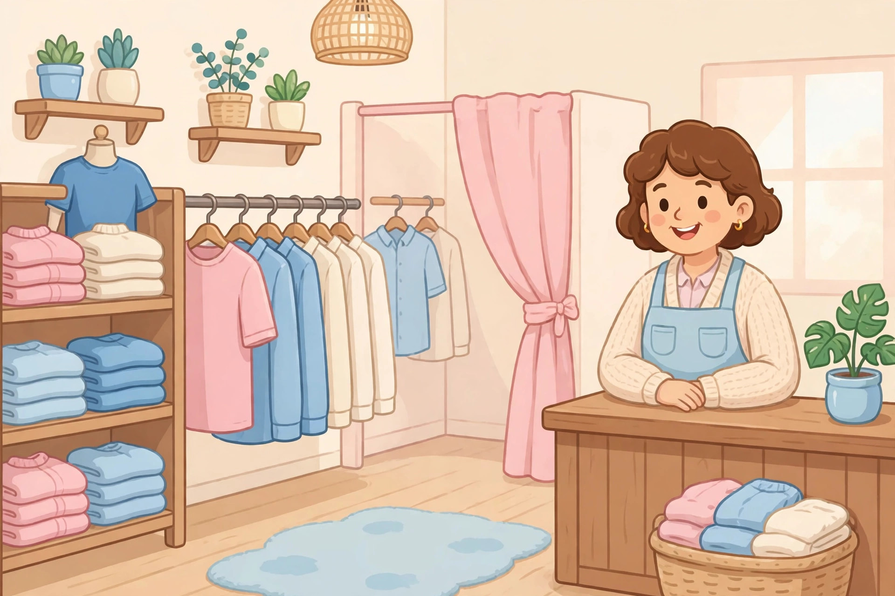

提示：如果頁面變成純文字、沒有圖片和播放按鈕，說明 Safari 閱讀器模式開了，點地址欄的書本圖標退出閱讀器，即可恢復彩色頁面。
買衣服
안녕하세요, 이 옷을 입어 봐도 돼요?
在服裝店試穿衣服，學問價錢、選顏色和用卡結帳。

안녕하세요, 이 옷을 입어 봐도 돼요?
네, 물론이에요. 저쪽에 탈의실이 있어요.
이 옷은 얼마예요? 파란색도 있어요?
35,000원이에요. 지금 세일 중이에요.
좋아요, 파란색으로 할게요. 카드로 할게요.
감사합니다. 안녕히 가세요!
還沒播放，點上面的大按鈕開始。
慢速女聲朗讀，先聽一遍，再一句一句跟讀。如果大按鈕點了還是沒聲音，請點直接打開音頻，或點下面的備用朗讀。
逐句翻譯
- 你好，請問這件衣服可以試穿嗎？
- 好的，當然可以。更衣室在那邊。
- 這件衣服多少錢？有藍色的嗎？
- 是 35,000 韓元。現在正在特價。
- 好的，我要藍色的。用卡付款。
- 謝謝你。慢走，再見！
文法講解
1. 「-아도 돼요 / -어도 돼요」：表示請求許可
是什麼：表示請求許可，意思像「可以……嗎？」。句型結構：動詞詞幹 + -아도 돼요 / -어도 돼요；詞幹母音是 ㅏ、ㅗ 時用 -아도，其他時候用 -어도。短文例句：이 옷을 입어 봐도 돼요?（這件衣服可以試穿嗎？）再舉一例：여기에 앉아도 돼요?（可以在這裡坐嗎？）容易錯的地方：-아도 돼요 是向對方請求許可，意思是「我可以嗎」；如果想請對方做某件事，要用「-아 주세요」，例如「이 옷을 보여 주세요」（請給我看這件衣服），兩種句型不要混用。
2. 「-으로 / -로」：表示選擇或手段
是什麼：表示選擇或手段，意思像「用……／以……」。句型結構：名詞 + -으로 / -로；子音結尾的名詞用 -으로，母音結尾的名詞用 -로。短文例句：파란색으로 할게요。（我要藍色的。）再舉一例：카드로 할게요。（我用卡付款。）容易錯的地方：不要和表示地點的「-에서」混淆；「-으로 / -로」說的是「用什麼、選什麼」，不是「在哪裡」。
3. 「-도」：表示「也、還」
是什麼：表示「也、還」，加在名詞後面。句型結構：名詞 + -도。短文例句：파란색도 있어요?（也有藍色的嗎？）再舉一例：저도 학생이에요。（我也是學生。）容易錯的地方：-도 的意思是「也」，不是連接兩個名詞的「和」；要說「A 和 B」時，要用「-하고」或「-와 / -과」，例如「커피하고 케이크」（咖啡和蛋糕）。
常用詞彙
- 옷 衣服（o-t，讀作「喔特」）—— 이 옷을 입어 봐도 돼요?（這件衣服可以試穿嗎？）
- 입어 보다 試穿（i-beo bo-da，讀作「一波 波大」）—— 이 옷을 입어 봐도 돼요?（這件衣服可以試穿嗎？）
- 탈의실 更衣室（ta-ri-sil，讀作「他里西兒」）—— 저쪽에 탈의실이 있어요。（更衣室在那邊。）
- 얼마 多少錢（eol-ma，讀作「喔兒媽」）—— 이 옷은 얼마예요?（這件衣服多少錢？）
- 파란색 藍色（pa-ran-saek，讀作「趴攔塞克」）—— 파란색으로 할게요。（我要藍色的。）
- 세일 特價、減價（se-il，讀作「塞一兒」）—— 지금 세일 중이에요。（現在正在特價。）
- 카드 卡、信用卡（ka-deu，讀作「卡嘚」）—— 카드로 할게요。（我用卡付款。）
跟讀小提示
一句一句慢慢讀，在逗號和句號的地方停一下；「옷」「얼마」「파란색」這幾個詞可以讀得重一點；問句的句尾要輕輕揚起來，例如「봐도 돼요?」「있어요?」，聽起來就像在提問。
留給你的問題
파란색을 좋아해요? 💙